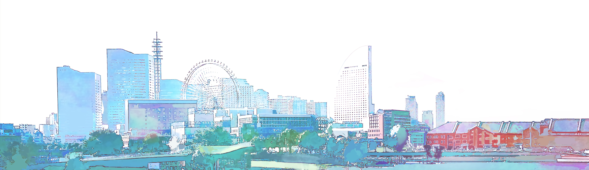
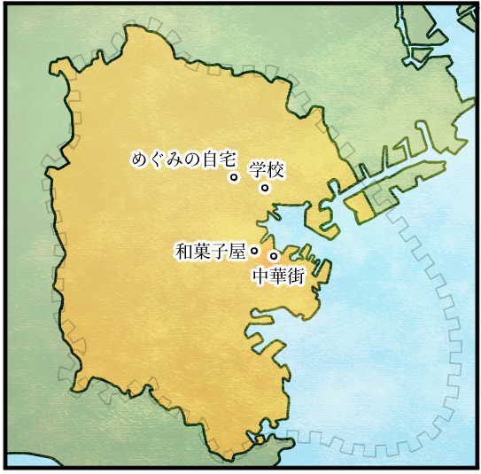
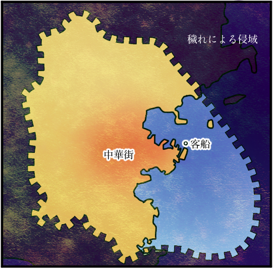
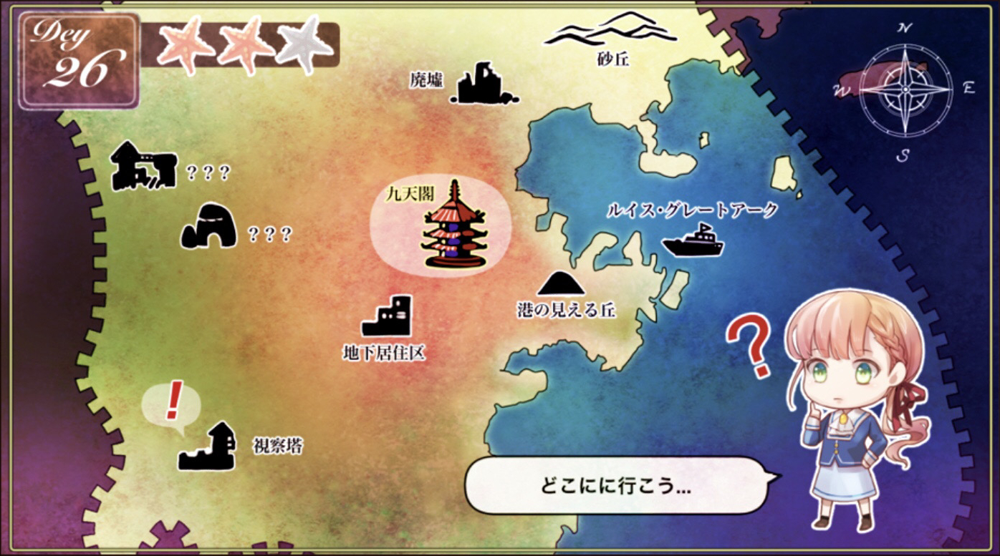

『花ノ芥蔕』とは

『花ノ芥蔕』は、
現代×中華風をテーマにした
エア乙女ゲーム作品です。
イラスト・音楽・動画制作を中心とした、
様々な企画を展開中です。
世界観


めぐみ達の住んでいた横浜から
約600年が経過した世界。
温暖化により海面上昇が進み、
横浜の港は海面下へ。
かつての港街は堤防を築くため、
そのほとんどが埋め立てられました。
めぐみ達の知る横浜らしい景観は、
既に失われています。
一方で、中華街は600年前と比べて
大きく勢力を増し、
人々の主な居住区となっています。
科学技術については、
めぐみ達の時代と比べても、
大きな進歩を遂げることなく
現在に至っています。
ゲームシステム

ストーリーは、
日常を描く「現代パート」と、
非日常を描く「未来パート」に
分かれています。
未来パートでは、
土地を浄化することで
ストーリーが進行します。
訪れた土地によって、
キャラクターとの友好度が深まる
イベントが発生し、
新たな物語や選択肢が
解放されます。
どのエンディングへ辿り着くかは、
プレイヤーの力量次第────？？
スタッフ
岩波ななみ
原作
シナリオ・作詞
キャラクターデザイン
イラスト
動画制作
Web制作
浅葱みこと（朝日ゆかり）
オープニングテーマ制作
エンディングテーマ制作
BGM制作
SEなど音響監督
動画制作